Opis rozwiązania i kroki użytkownika
Opis rozwiązania i kroki użytkownika
„Naładuj mapę Polski.” działa wewnątrz dane.gov.pl: na kontach dostawców danych, zwykłych zbiorach portalu i jego regułach jakości. Prototyp to fork otwartego kodu portalu.
Wgrywa plik, jaki ma, albo dodaje jeden AED w formularzu. Kreator poprawia błędy, a portal przypomina o przeglądach.
Co noc składa zbiory instytucji i publiczne listy w jeden otwarty wykaz. Danym spoza portalu nie ufa, dopóki nie potwierdzi ich gmina.
Widzi najbliższy AED otwarty teraz i może zgłosić urządzenie, które nie działa.

Plik w dowolnym układzie, automatyczne poprawki, publikacja jako zbiór instytucji.
Formularz bez pliku i szablonu.
Jeden ogólnopolski zbiór scalany co noc, gotowe listy dołączane jednym polem.
Które AED działają teraz albo w wybranym dniu i godzinie.
Dla świadka, a przez API także dla 112, z gotowym opisem miejsca.
Niedziałający AED zgłoszony z mapy trafia do instytucji.
Tabela, CSV, GeoJSON, JSON-LD i API z dostępnością na wskazaną godzinę.
Automatyczne przypomnienia o przeglądach, elektrodach i bateriach to zachęta do dodania danych.
Gmina sprawdza AED znalezione poza portalem, zanim staną się danymi potwierdzonymi.
Publiczne listy z podaniem autora, a dane bez odpowiedniej licencji dopiero po zgodzie dysponenta.
Pasek w całym portalu, licznik województw, posty, odznaka, logo i księga znaku.
30 pól, 4 obowiązkowe informacje, plik XLSX z regułą dla każdego pola.
Pobranie danych po poprawkach i oświadczenie gminy publikującej AED szkół czy firm.
Urzędnik wgrywa plik, który już ma. Nie musi go przerabiać ani znać formatów portalu.
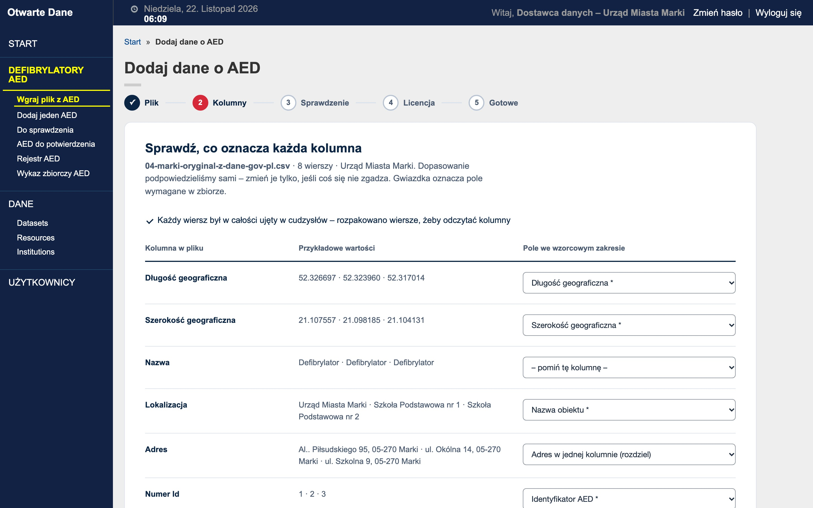
Typowe błędy kreator poprawia sam. Nic błędnego nie trafia do publikacji.
Kreator wykrywa zamienione współrzędne, punkt poza gminą lub Polską, ten sam punkt dwa razy, brakujące pola, błędne formaty, dane osobowe i godziny zapisane tekstem. Brakujące współrzędne uzupełnia z adresu (GUGiK). Na koniec stosuje reguły jakości portalu. W prawdziwym pliku Marek poprawił 15 pól w 8 rekordach.

Jedno kliknięcie i dane są zwykłym zbiorem instytucji w portalu.
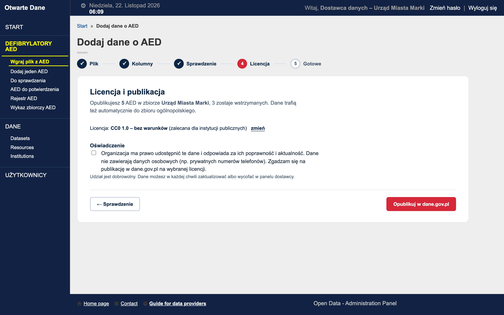
Szkoła czy firma z jednym urządzeniem nie musi robić pliku ani szablonu.

Jeden ogólnopolski zbiór. Instytucja z gotową listą dołącza ją jednym polem.
Mechanizm działa jak wykaz chronionych danych DGA, który portal już ma.
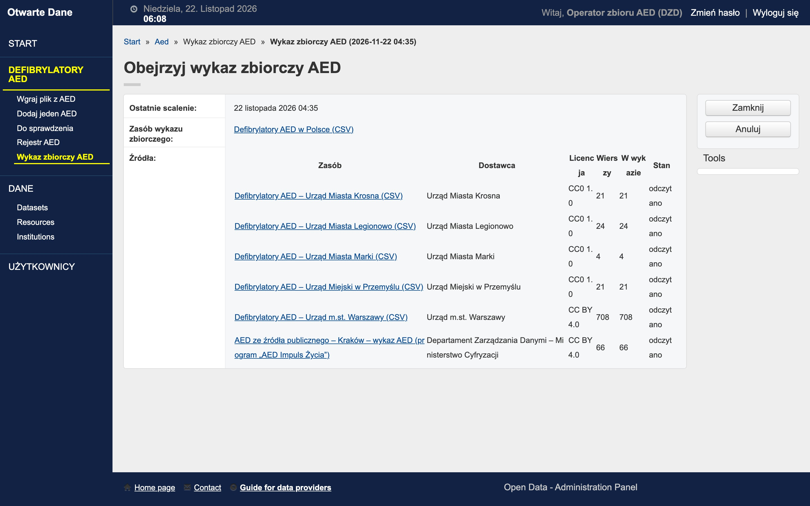
Mapa pokazuje nie tylko, gdzie są AED, ale też czy można z nich teraz skorzystać.
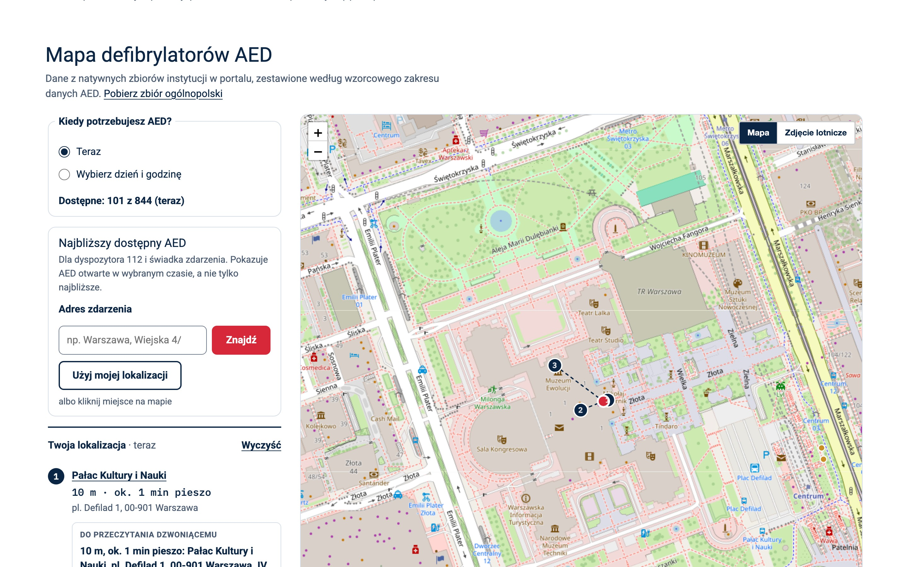
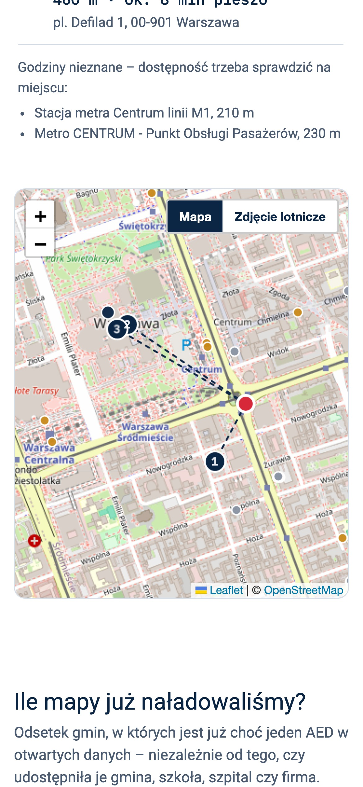
Dla świadka, a po podłączeniu API także dla dyspozytora 112: AED otwarty teraz, a nie tylko najbliższy.


Każdy może dać znać, że AED nie działa. Instytucja dowiaduje się od razu.
Zgłoszenie trafia do instytucji przez uwagi do zbioru, czyli istniejący mechanizm portalu, oraz jako sprawa w „Do sprawdzenia”. Zgłoszony AED ma oznaczenie na mapie.
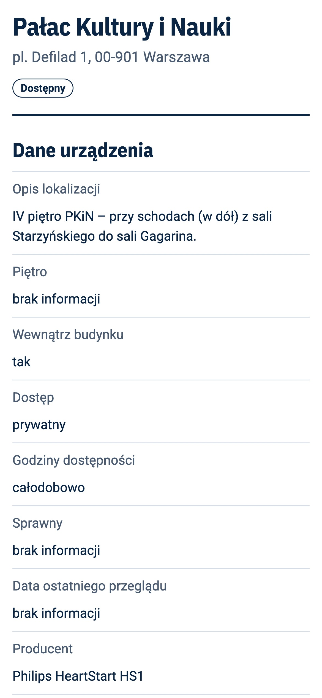
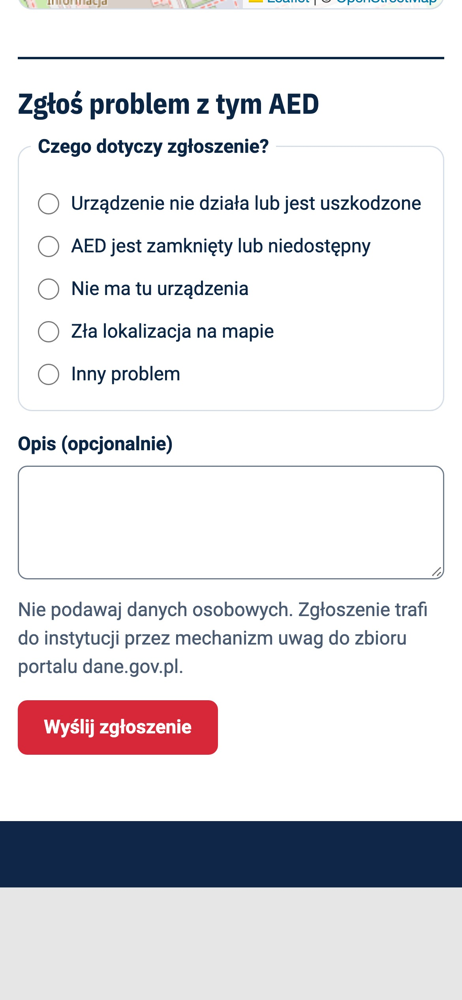
Jeden zbiór dla 112, aplikacji i analityków, w formatach maszynowych.
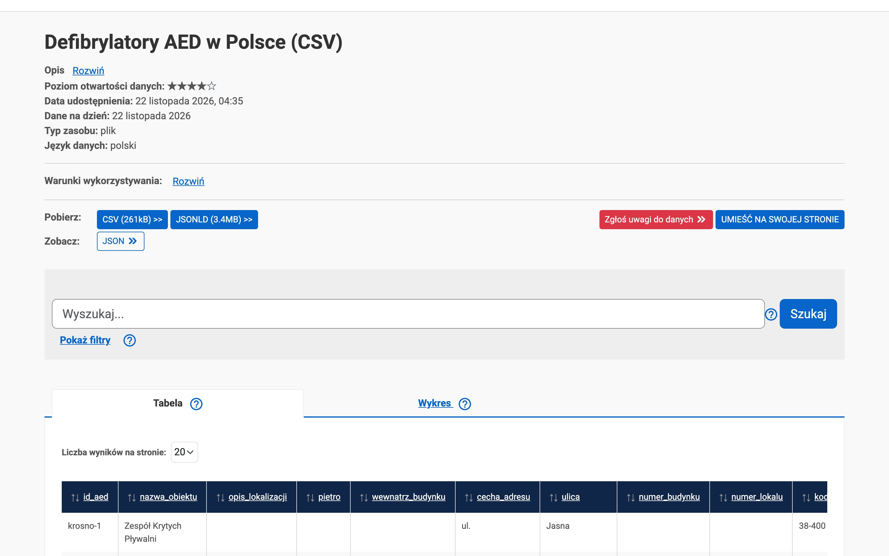
Instytucja chętniej dodaje dane, gdy nie musi pamiętać o terminach. Przypomnienia przychodzą same.
Dodanie AED do portalu daje instytucji coś w zamian: przypomnienie e-mailem 30 dni przed przeglądem albo wymianą elektrod i baterii, bez prowadzenia własnych rejestrów. Dzięki temu dane nie starzeją się po publikacji. Poprawki trafiają do osobnego zasobu instytucji i nie nadpisują jej oryginalnego pliku.
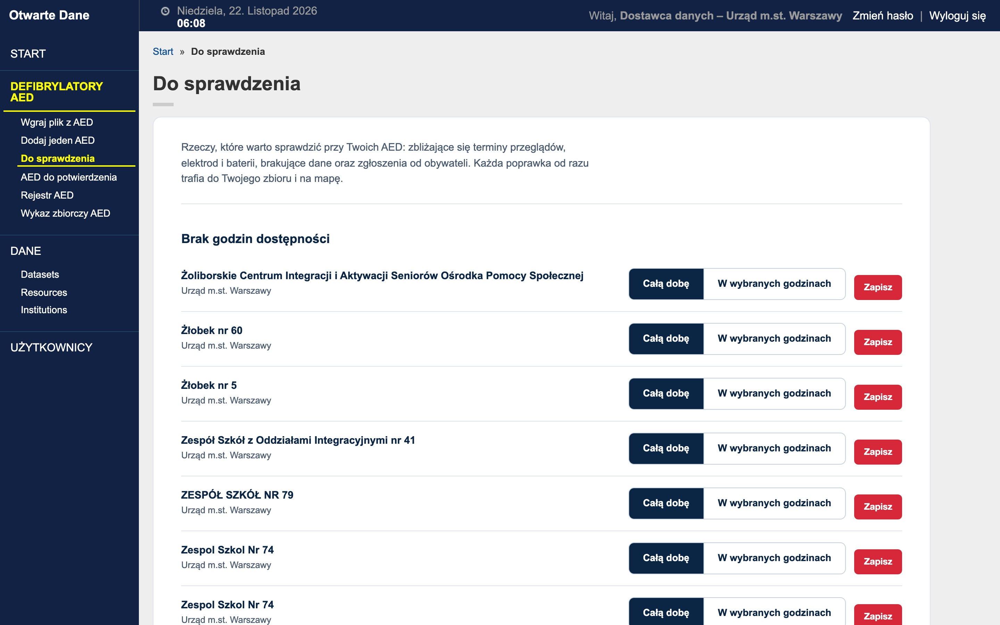
Danym spoza portalu nie ufamy, dopóki nie sprawdzi ich gmina.
Decyzje gminy przetrwają nocne pobieranie źródeł. Dopóki AED nie zostanie potwierdzony, na mapie i w API jest oznaczony jako niepotwierdzony.

Jak najwięcej AED w jednym miejscu, bez łamania żadnej licencji.
Stan demo: 778 AED od dysponentów i 66 z listy Krakowa w wykazie, 17 971 AED z OpenStreetMap w 5 650 prośbach o zgodę.
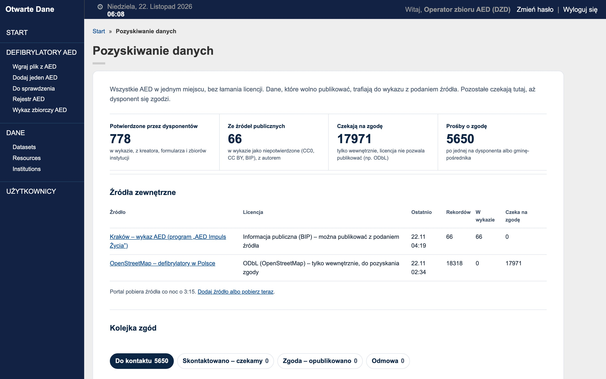
Narzędzie to połowa. Akcja sprawia, że instytucje chcą dodać dane.
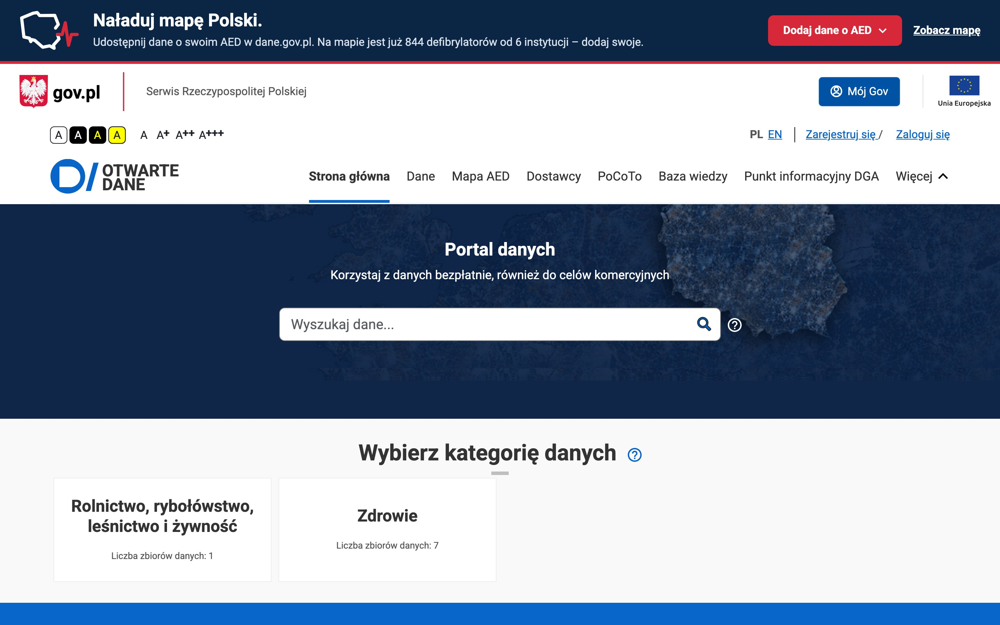
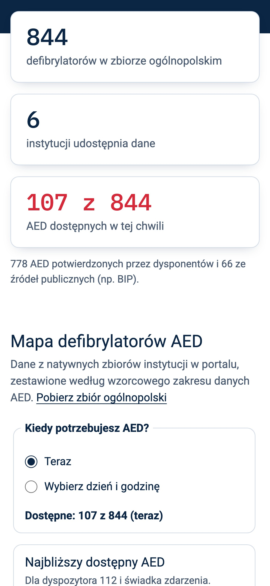
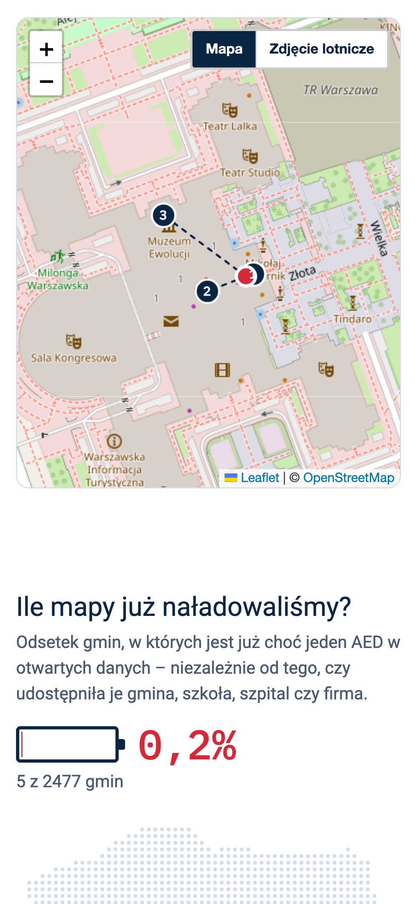